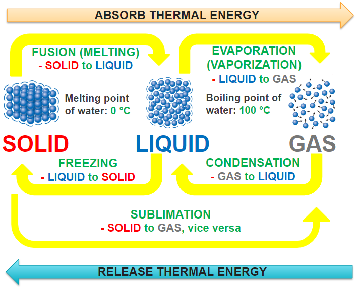
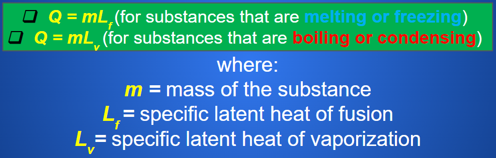
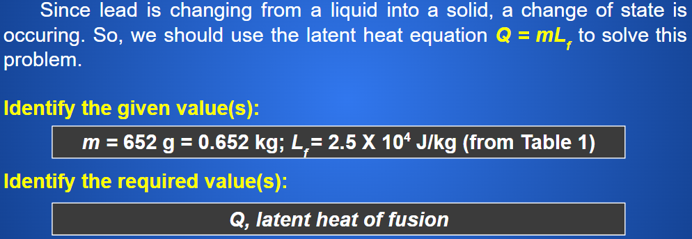
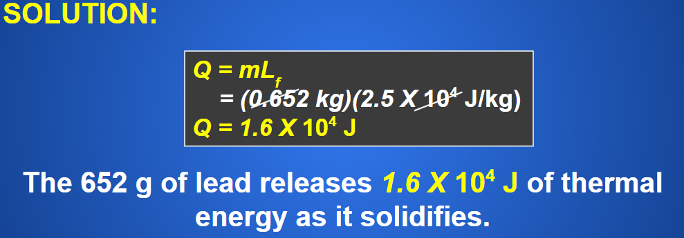
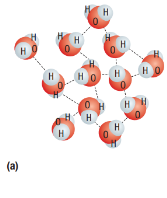
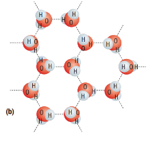

States of Matter and Changes of State
When solids, liquids, or gases absorb or release enough thermal energy, they may change state. A solid can change into a liquid. A liquid can turn into a gas.

Callout
Note: Thermal energy is not really “absorbed”; it is TRANSFORMED into kinetic energy and potential energy of the substance’s particles. Remember that Energy is Always Conserved.

Tabs
- A graph that shows the temperature changes that occur while thermal energy is absorbed by a substance.
- the vertical axis (y–axis) represents temperature and the horizontal axis (x–axis) represents the amount of thermal energy absorbed.

- A graph that shows the temperature changes that occur while thermal energy is being removed from a substance
- the vertical axis (y-axis) represents temperature, and the horizontal axis (x-axis) represents the amount of thermal energy released.

Callout
Angled parts on each graph indicate a change in temperature and occur when only one state is present.
Flat parts on each graph occur when more than one state is present.
- Heating graph – thermal energy is being absorbed by the water molecules.
- Cooling graph – thermal energy is being released by the water molecules.
The temperature remains constant during a change of state because thermal energy is being used to change the potential energy of the substance’s particles, not their kinetic energy.
The heating graph shows a distinct melting point and boiling point. The cooling graph shows a distinct condensation point and freezing point.
The melting and freezing points are both 0 °C, and the boiling point and condensation points are both 100 °C. In general, melting and freezing occur at the same temperature, and boiling and condensation occur at the same temperature.
Callout
Potential Energy
You may believe that the temperature of a substance should change while it is absorbing or releasing thermal energy because thermal energy affects the kinetic energy of particles. But why does the temperature not change during melting, freezing, boiling, or condensation?
When a substance melts, boils, condenses, or freezes, the absorbed or released thermal energy is transformed into Potential Energy, rather than kinetic energy. Since the kinetic energy of the particles does not change, the temperature of the substance remains constant during a change of state.
Latent Heat (Q)
the total thermal energy absorbed or released when a substance changes state
- measured in joules
When a substance absorbs or releases thermal energy during a change of state, its temperature remains constant. This absorbed or released thermal energy during a change of state is the latent heat.
Every substance has a latent heat of fusion and a latent heat of vaporization.
Latent heat of fusion
- the amount of thermal energy required to change a solid into a liquid or a liquid into a solid
Latent heat of vaporization
- the amount of thermal energy required to change a liquid into a gas or a gas into a liquid
Specific Latent Heat (L)
the amount of thermal energy required for 1 kg of a substance to change from one state into another
- measured in joules per kilogram (J/kg)
Specific latent heat of fusion (Lf)
- the amount of thermal energy required to melt or freeze 1 kg of a substance measured in joules per kilogram (J/kg).
Specific latent heat of vaporization (Lv)
- the amount of thermal energy required to evaporate or condense 1 kg of a substance measured in joules per kilogram (J/kg)
Specific Latent Heats for Various Substances

Calculate the Latent Heat (Q)

Callout
Example
How much thermal energy is released by 652 g of molten lead when it changes into a solid?


Practice
How much thermal energy is absorbed when a 350 g bar of gold melts?
Callout
Water: A Special Liquid
Water molecules are V-shaped and have two hydrogen atoms attached to one oxygen atom.

The hydrogen atoms in a water molecule have a small positive charge, while the oxygen atom has a small negative charge.
|
 represents forces of attraction among water molecules |

|